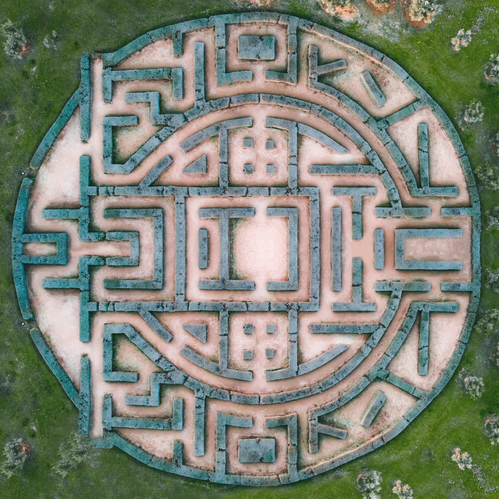

Jose Porras Campos
Software Engineer
About Me
Hello! My name is Jose Andre Porras Campos. I am an aspiring Software Engineer with a passion for Theoretical Computer Science and Mathematical Optimization. I like to constantly challenge myself with new projects, therefore I programmed this website. I want to persure a career in. On my free time I like to hike in nature and travel to different countries. I love meeting new people, feel free to connect with me!
Experience
Computer Science Teaching Assistant 09/2022-Present
I have been a teaching assistant for over a year now. I have assisted in the classes that teach the mathematical concepts required for Computer Science, as well as the introductory sequence for Data Structures and Algorithms. In Fall 2023, I took a leadership position in a laboratory that teaches programming principles to people without a coding experience. This has increased my abilities to clearly communicate my ideas as well as work in a group with other assistants.
College of Science and Engineering Ambassador 09/2022-09/2023
After starting college I found a new passion on organization and planning. This is why I decided to join the College of Science and Engineering Ambassador program to meet with a new student several times throughout their first year at the university to discuss college objectives, and plan for a timely graduation while participating in extracurricular activities.
Projects
-
Optimization of Search Algorithms in Mazes
Developed an algorithm to improve the search time of the algorithm A Star using ideas of the local search algorithm Simulated Annealing. Please read the article by clicking here!
-
MNIST Classification from Scratch

Built a Neural Network from scratch based on CS229's notes in backpropagation [1]. This project was also supervised by Prof. England of the Industrial and Systems Engineering Department at the University of Minnesota.
[1] CS229 Lecture Notes Andrew Ng and Kian Katanforoosh (updated Backpropagation by Anand Avati). Click here
Education
University of Minnesota: Bachelor of Science in Computer Science
Relevant coursework: Software Engineering, Algorithms and Data Structures, Introduction to Artificial Intelligence, Optimization for Machine Learning
University of Minnesota: Bachelor of Industrial and Systems Engineering
Relevant coursework: Engineering Economics, Optimization Models and Methods, Sytems Engineering
Carnegie Mellon University: Deep Learning Executive Education
Bears
These are some bear images I created using the Midjourney A.I. Other than my passion for different technologies, I have a passion for hiking and exploring different national parks around the United States.